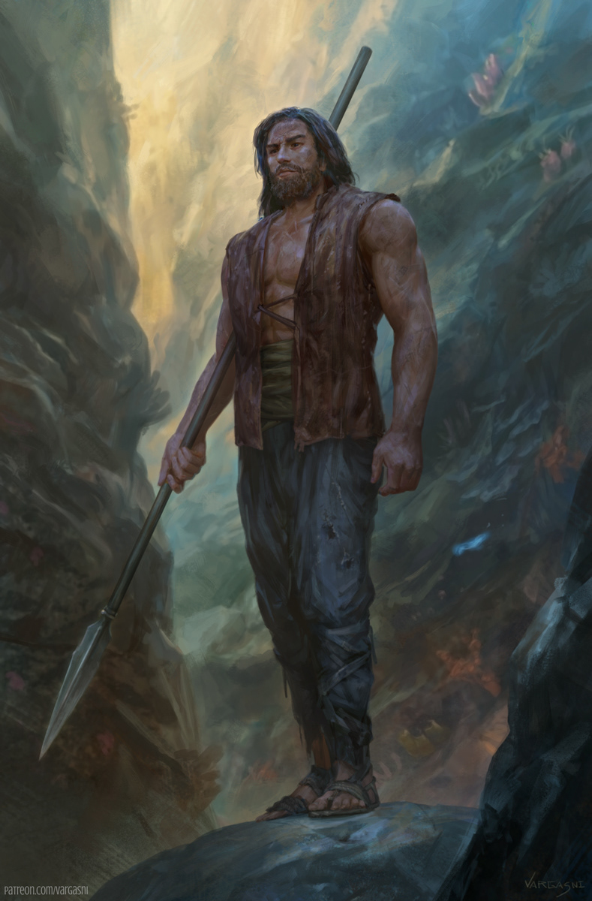

Kaladin Stormblessed is the main character in Brandon Sanderson's epic fantasy series, "The Stormlight Archive." Kal is a skilled and resilient warrior who carries the burdens of his past. Born into a lower-class family, even though his father is a surgeon. He joins the military as a surgeon apprentice to protect his wrongfully drafted younger brother. There he rises to become a talented spearman and a natural leader. Kal's journey is filled with personal tragedy and adversity, which only strengthens his determination to protect anyone who needs protection. Kal at one point hits rock bottom multiple times and even though most would have given up he kept on going. I am drawn to characters who have gone through hell and back and just keep going.
| Name: | Kaladin Stormblessed |
| Age: | Teens |
| Occupation: | Soldier |
| Notable Characteristics: | A need to protect, bonded with the spirit of honor, marked on forehead with a slave brand |
Key people in his life
- Above all else kall most important feature is his need to proectect
- Kal's journy begins with the need to protect his younger brother, Tien
- Kall owes his life the wind spirit like "spren" who saved his life and is now a life long compainion
- Kal also owes his life to his determination to kill the one who betrayed him, his once general Amaram
Memorable Quotes
“I will protect those who cannot protect themselves.”
″‘I will protect even those I hate,’ Kaladin whispered through bloody lips. ‘So long as it is right.‘”